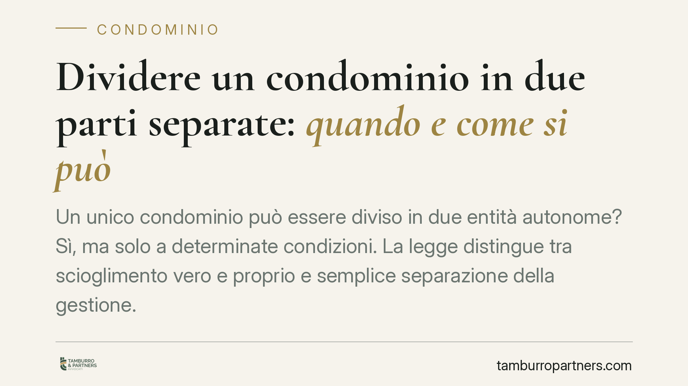

Dividere un condominio in due parti separate: quando e come si può
Un unico condominio può essere diviso in due entità autonome? Sì, ma solo a determinate condizioni. La legge distingue tra scioglimento vero e proprio e semplice separazione della gestione. Vediamo cosa prevede il codice civile, quali maggioranze servono, quando interviene il giudice e che fine fanno le parti comuni non divisibili.

Il fatto e perché conta
Capita spesso, negli edifici composti da più corpi di fabbrica, che i condòmini di una parte non condividano interessi, spese o modalità gestionali con quelli dell'altra. Da qui la domanda ricorrente: si può dividere il condominio in due parti separate, ciascuna con propria amministrazione e propri conti?
La risposta è affermativa, ma passa per regole precise. Occorre distinguere due piani spesso confusi: lo scioglimento del condominio in condominii distinti e la mera separazione della gestione, che non incide sulla struttura giuridica dell'edificio.
Inquadramento normativo
Il punto di partenza è l'art. 61 delle disposizioni di attuazione del codice civile. Questa norma non disciplina lo scioglimento: si limita a stabilire quando un gruppo di edifici dotati di parti comuni può essere considerato come formato da più condominii distinti. In altre parole, definisce il presupposto strutturale.
Lo scioglimento vero e proprio è invece regolato dall'art. 62 disp. att. c.c.. La norma prevede due vie.
La prima è consensuale: l'assemblea può deliberare lo scioglimento con la maggioranza richiamata dall'art. 62, comma 1, disp. att. c.c., che rinvia al quorum dell'art. 1136, comma 2, c.c. — cioè la maggioranza degli intervenuti che rappresenti almeno 500 millesimi dell'edificio.
La seconda è giudiziale: quando questa maggioranza non si raggiunge, l'art. 62, comma 2, disp. att. c.c. consente a ciascun condomino di rivolgersi all'autorità giudiziaria per ottenere lo scioglimento. Il giudice verifica i presupposti di legge e, se sussistono, dispone la divisione.
È un errore attribuire lo scioglimento all'art. 61: quella norma delimita solo la nozione di gruppo di edifici. La disciplina operativa — maggioranze e via giudiziale — sta tutta nell'art. 62.
Scioglimento o semplice separazione della gestione?
Il discrimine è sostanziale. Con lo scioglimento nascono due condominii giuridicamente autonomi: ciascuno avrà propria assemblea, proprio amministratore, propri regolamenti e millesimi. È una modifica strutturale definitiva.
La separazione della gestione, invece, non spezza il condominio: si continua a far parte di un'unica entità, ma si organizzano contabilità o servizi in modo distinto per esigenze pratiche. È una soluzione più leggera, ma non produce autonomia giuridica.
La scelta tra le due strade dipende dagli obiettivi reali dei condòmini. Chi vuole liberarsi definitivamente dai vincoli comuni deve puntare allo scioglimento; chi cerca solo ordine gestionale può fermarsi alla separazione.
La sorte delle parti comuni indivisibili
Qui sta il nodo tecnico più delicato. Lo scioglimento è possibile solo se le due parti dell'edificio possono essere divise senza dover eseguire opere che ne alterino la stabilità o modifichino l'aspetto.
Ma esistono parti comuni che, per natura o funzione, non si possono dividere: si pensi a fondamenta, muri maestri, un impianto centralizzato al servizio di entrambi i corpi di fabbrica, un cortile o un accesso unico.
Queste parti restano in comunione tra i due nuovi condominii. Trovano applicazione i criteri dell'art. 1123 c.c.: le spese di conservazione e godimento si ripartiscono in proporzione al valore delle proprietà, salvo diverso uso. Si configura, in sostanza, un condominio parziale relativo ai soli beni che continuano a servire più unità.
È un aspetto che va valutato prima di deliberare: lo scioglimento non cancella i costi comuni indivisibili, li ridistribuisce soltanto tra le nuove entità.
Implicazioni pratiche
Per i condòmini lo scioglimento comporta la ricostituzione ex novo di due strutture: nuove nomine, nuovi conti correnti, nuovi millesimi. Non è un'operazione automatica né immediata.
Per gli amministratori significa gestire con rigore la fase di transizione: chiusura dei conti dell'ente originario, verifica delle pendenze, corretta attribuzione dei debiti e crediti alle due nuove realtà.
Sul piano giurisprudenziale, l'orientamento consolidato subordina lo scioglimento alla concreta divisibilità dell'edificio: dove la separazione richiederebbe interventi strutturali rilevanti, la richiesta viene respinta. Prima di procedere è quindi opportuna una verifica tecnica.
Cosa fare in concreto
- Verificate la divisibilità materiale dell'edificio con una perizia tecnica: senza divisibilità strutturale, lo scioglimento non è ammesso.
- Individuate le parti comuni indivisibili e mettete in conto che resteranno in comunione con ripartizione ex art. 1123 c.c.
- Convocate l'assemblea e verificate la disponibilità del quorum ex art. 1136, comma 2, c.c. richiamato dall'art. 62 disp. att. c.c.
- Valutate la via giudiziale solo se la maggioranza non è raggiungibile, ricordando che il giudice controlla i presupposti di legge.
- Pianificate la transizione contabile con l'amministratore: chiusura dell'ente originario e corretta attribuzione di crediti e debiti.
Disclaimer
Contributo informativo a cura di Tamburro & Partners - Avv. Giuseppe Tamburro. Non costituisce parere legale.
Ogni condominio ha una storia a sé.
Se gestisci un'amministrazione e vuoi un confronto su una specifica questione condominiale, scrivi allo studio. Ti rispondiamo entro un giorno lavorativo.